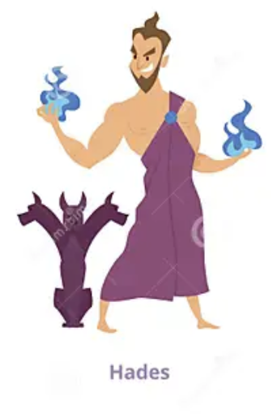

Greek Mythology Hades
Home, Aphrodite, Ares, Athena.
Hades around the world is known for being the Greek God of the Underworld and being the husband to Persephone. He is both the brother of Zeus and Poseidon while also being siblings to Demeter, Hera, and Hestia. Many had depictions of Hades being an evil person due to his job being the ruler of the Underworld and his name translating to "the unseen one." However, it is all false considering in all of greek mythology he has only acted in defense for his family. Hades is a rather relaxed and passive person who has not used his status as something threatening.
What society depicts Hades.

How he is really seen.

With all the negativity placed around him, it was more towards how christianity (not all) have portrade hades as being "Satan" or "The Devil" even though both instance, they are different religious and Hades has never been mean at all. One story has it where Orpheus went to the underworld and made a powerful yet passionate speech and song about getting his wife back, Hades agrees because the motivation of his love for his wife moved both him and his wife Persephone.